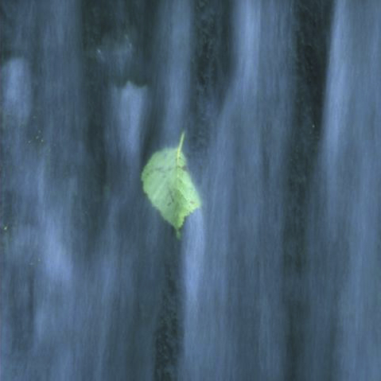

無壓式的全然覺知
修行的心只要愈簡單、愈平凡， 就越容易面對當前的問題， 而獲得進一步的解決。 但是你修行的方式 若是被種種的神秘經驗所吸引， 那麼這些經驗就會變成是修行的障礙物 。為此因素 ，你現在是不是能夠放手， 把頭腦裏面的知識丟掉。

包括今日的所見所聞 和所有的方法、概念全部都放下 。當你已經看過了知道了之後 ，那麼就不須要留下來 ，成為心上的負擔了 。
你不須要留下什麼任何精緻的東西 ，因為這跟當下你所面對的真相 ，是完全扯不上任何關係。 任何的神聖經驗都會阻礙你 ，因為它讓你僅止以此 。
修行之中如果遇到任何寶物 ，記得要馬上丟了它 ，這樣子你才能走完全程 。你只是面對自己， 單純的自己。 與自己見面可不須要帶任何禮物， 輕便即可！ 就這麼簡單。
如果你能在沒有任何動機和特定目標的情況下， 一眼就看透意念的全貌 ，那很好！ 那就一直讓它持續下去就好。 就像是在傾聽一條遄急的河水 ，不斷地流動一般 。當你沒有任何特定目標在心中時 ，那個能被觀察的中心點也就消失 。而那觀賞者 ，也就是動機的製造者也會同時消失。 這時你的內心沒有任何衝突。 這並不僅僅是念與念之間出現了空檔， 而是徹底從衝突之中解脫了。一種無壓式的全然覺知，在你的心中自然展開來。
實際練習
 正念呼吸
正念呼吸
僅文字檔
 四念處
四念處
僅文字檔
 聆聽
聆聽
僅文字檔
 散步沉思
散步沉思
僅文字檔
 無壓式的全然覺知
無壓式的全然覺知
僅文字檔
 引用YouTube練習
引用YouTube練習
--- 果聞法師 提供